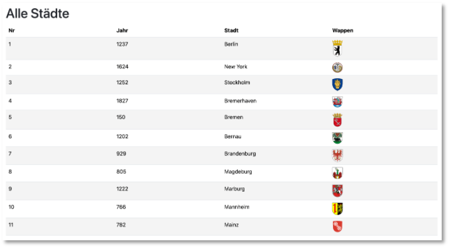
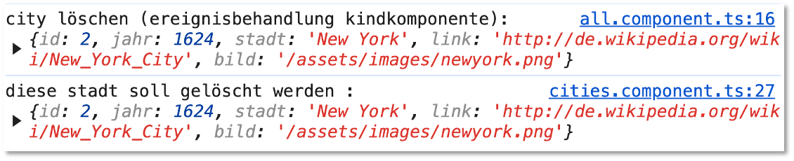

Datenfluss und Signals¶
In diesem Abschnitt wird beschrieben, wie Daten von der Elternkomponente an die Kindkomponente übergeben werden können. Außerdem wird gezeigt, wie Ereignisse, die in der Kindkomponente ausgelöst wurden, an die Elternkomponente weitergereicht werden können, um dort verarbeitet zu werden. Ein wesentliches Konzept stellt dabei in Angular die Verwaltung von Signals dar. Wir betrachten dieses Konzept genauer.
Datenfluss von Eltern- zu Kindkomponente¶
Wir betrachten das Beispiel mit der CitiesComponent weiter (siehe Routing und Services) und nehmen nun aber an, dass wir die Darstellung einer (Card) bzw. aller (Table) Städte jeweils in einer eigenen Komponente realsisieren. Dazu erstellen wir uns mithilfe von
zwei Kindkomponenten der Elternkomponente CitiesComponent.
Die cities.component.ts implementieren wir wie folgt:
Erläuterungen:
- Alles, was
ActivatedRoute,dataServiceund denCity-Typ betrifft, wurde bereits in Routing und Services erläutert. Wir verwenden hier nur diegetAll()-Funktion desDataService. - Wenn die
Cities-Komponente jedoch über eine parametrisierte Route aufgerufen wird, z.B./cities/1, dann ermitteln wir aus dem gesamtenstaedteParent-Array diestadtParent, die dieseridentspricht. - Ist die Route nicht parametrisiert, ist der Schalter
allauftrue, sonst auffalse. - Entspricht bei parametrisierter Route der Parameter keiner
idaus demstaedteParent-Array, ist der SchalternoCityauftrue, sonst auffalse. - Die Variablen
staedteParentundstadtParenthätten auchstaedteundstadtheißen können, wir wollen hier aber genauer darauf aufmerksam machen, welche Variablen wo definiert werden. Deshalb das PostfixParent.
Die cities.component.html sieht nun wie folgt aus:
Erläuterungen:
- Ist der Schalter
allauftrue, wird dieAllComponentüber ihren Komponentenselektor<app-all>eingebunden. Als Attribut für diese Komponente wirdstaedteChildan den Wert der VariablenstaedteParentgebunden. Die VariablestaedteChildwird alsinput()in derAllComponentdefiniert. Das schauen wir uns gleich an. - Ist der Schalter
allauffalseund istnoCityauftrue, wird dies angezeigt und einButtonzur Verfügung gestellt, mit dem man wieder zurCitiesComponenteunter Verwendung der Route/cities(also ohne Parameter) gelangt. - Ist der Schalter
allauffalseund istnoCityebenfalls auffalse, wird dieOneComponentüber ihren Komponentenselektor<app-one>eingebunden. Als Attribut für diese Komponente wirdstadtChildan den Wert der VariablenstadtParentgebunden. Die VariablestadtChildwird alsinput()in derOneComponentdefiniert. - Es ist üblich, die zusammengehörigen Variablen der Eltern- und Kindkomponente gleich zu benennen, also statt
staedteParentundstaedteChildjeweils nurstaedte. Hier wurde zur besseren Veranschaulichung des Prinzips jedoch eine Unterscheidung der Variablennamen vorgenommen.
Die all.component.ts schaut nun wie folgt aus:
Erläuterungen:
- Hier wird die die Variable
staedteChildmithilfe derinput()-Funktion deklariert. Es gibt zwei Varianten derinput()-Funktion: als optionale Inputs (input()) und als notwendige (input.required()). - Inputs sind Signals. Den Signals widmen wir gleich einen eigenen Abschnitt. Wichtig ist hier nur zu wissen, dass die Elternkomponente der Kindkomponente stets die aktuellen Werte der
staedteParent-Variablen übergibt.
Die all.component.html könnte dann z.B. so aussehen:
Beachten Sie, dass der Wert eines Signals (in unserem Fall staedteChild) per staedteChild() verfügbar ist. Wenn wir also auf das staedte-Array zugreifen, dann über staedteChild() (siehe Zeile 14).
Die Anwendung sieht nun unter localhost:4200/cities unegfähr so aus:

Hier noch das dazu passende all.component.css zur Information:
Uebung
Implementieren Sie passend die OneComponent, so dass die Stadt, die mittels <app-one [stadtChild]="stadtParent"> an die OneComponent übergeben wird, dargestellt wird (z.B. als Card).
Datenfluss von Kind- an Elternkomponente¶
Beim Datenfluss von der Kindkomponente zur Elternkomponente handelt es sich typischerweise um die Weiterleitung eines Ereignisses, das in der Kindkomponente ausgelöst wird, an die Elternkomponente. Das Ereignis in der Kindkomponente führt dann zum Auslösen eines Ereignisses in der Elternkomponente. Wir verwenden dazu die output()-Funktion. Diese gibt nicht, wie input() ein Signal zurück, sondern ein OutputEmitterRef. Wir schauen uns das am Beispiel an.
Angenommen, wir erweitern die Tabelle in der AllComponent um eine weitere Spalte und fügen in diese Spalte Delete-Buttons hinzu:
Bootstrap-Icons hinzufügen
- Geben Sie
npm i bootstrap-iconsein. -
Öfnnen Sie
angular.jsonund fügen jeweils"node_modules/bootstrap-icons/font/bootstrap-icons.css"bei beiden"styles"-Eigenschaften hinzu:1 2 3 4 5 6 7 8 9 10 11 12 13 14 15 16 17 18 19 20 21 22 23 24 25 26 27 28 29 30 31 32 33 34 35 36 37 38 39 40 41 42 43 44 45 46 47 48 49 50 51 52 53 54 55 56 57 58 59 60 61 62 63 64 65 66 67 68 69 70 71 72 73 74 75 76 77 78 79 80 81 82 83 84 85 86 87 88 89 90 91 92 93 94 95 96 97 98 99 100 101 102 103 104
{ "$schema": "./node_modules/@angular/cli/lib/config/schema.json", "version": 1, "newProjectRoot": "projects", "projects": { "childparent": { "projectType": "application", "schematics": {}, "root": "", "sourceRoot": "src", "prefix": "app", "architect": { "build": { "builder": "@angular-devkit/build-angular:application", "options": { "outputPath": "dist/childparent", "index": "src/index.html", "browser": "src/main.ts", "polyfills": [ "zone.js" ], "tsConfig": "tsconfig.app.json", "assets": [ { "glob": "**/*", "input": "public" } ], "styles": [ "node_modules/bootstrap/dist/css/bootstrap.min.css", "src/styles.css", "node_modules/bootstrap-icons/font/bootstrap-icons.css" ], "scripts": [ "node_modules/bootstrap/dist/js/bootstrap.min.js" ] }, "configurations": { "production": { "budgets": [ { "type": "initial", "maximumWarning": "500kB", "maximumError": "1MB" }, { "type": "anyComponentStyle", "maximumWarning": "2kB", "maximumError": "4kB" } ], "outputHashing": "all" }, "development": { "optimization": false, "extractLicenses": false, "sourceMap": true } }, "defaultConfiguration": "production" }, "serve": { "builder": "@angular-devkit/build-angular:dev-server", "configurations": { "production": { "buildTarget": "childparent:build:production" }, "development": { "buildTarget": "childparent:build:development" } }, "defaultConfiguration": "development" }, "extract-i18n": { "builder": "@angular-devkit/build-angular:extract-i18n" }, "test": { "builder": "@angular-devkit/build-angular:karma", "options": { "polyfills": [ "zone.js", "zone.js/testing" ], "tsConfig": "tsconfig.spec.json", "assets": [ { "glob": "**/*", "input": "public" } ], "styles": [ "node_modules/bootstrap/dist/css/bootstrap.min.css", "src/styles.css", "node_modules/bootstrap-icons/font/bootstrap-icons.css" ], "scripts": [ "node_modules/bootstrap/dist/js/bootstrap.min.js" ] } } } } } }
Mit (click)="delete(item)" behandeln wir das click-Ereignis durch den Aufruf der Funktiondelete(). Dieser übergeben wir als Parameter die jeweilige Stadt (item ist stets ein City-Objekt aus dem staedte-Array). In dem Button wurde ein Bootstrap-Icon verwendet.
In der all.component.ts benötigen wir nun folgende Definitionen:
Erläuterungen:
- In Zeile
14wird die VariabledeleteStadtals einoutput()deklariert. Die Funktionoutput()wird mitCitytypisiert. Die Funktionoutput()erzeugt einOutputEmitterRef, welches genutzt werden kann, um mithilfe der Funktionemit()Werte an einen Konsumenten (die Elternkomponente) zu emittieren (weiterzuleiten). - Diese
emit()-Funktion wird in Zeile17aufgerufen und leitet den Wertstadtan die Elternkomponente weiter.
Wir schauen uns nun an, wie die Verbindung zwischen Eltern- und Kindkomponente für dieses output() hergestellt wird. Dieses geschieht über Eventbinding:
Erläuterung:
- Die Verbindung zwischen Eltern- und Kindkomonente wird mithilfe von
(deleteStadt)="deleteStadtEreignis($event)"hergestellt. Mit den runden Klammern()wird das Eventbinding beschrieben. Wir binden alsodeleteStadtder Kindkomponente, die ein Ereignis emittiert, an die FunktiondeleteStadtEreignis($event), die das Ereignis in der Elternkomponente behandelt. Der Ereignisbehandlung wird das Ereignis mittels$eventübergeben.
Die Definition der deleteStadtEreignis($event)-Funktion in cities.component.ts sieht wie folgt aus:
Wir geben das zu löschende Objekt (die stadt) also nur einfach auf die Konsole aus. Wenn wir später einen Endpunkt in unserer REST-API zum Löschen einer einzelnen Stadt haben, dann könnten wir diesen nun aufrufen.
Wichtig ist, dass das click-Ereignis auf den Lösch-Button in der AllComponent durch die delete()-Funktion behandelt und darin das Ereignis an die Elternkomponente CitiesComponent emittiert wird. Es erscheinen in der Konsole demnach beide Ausgaben direkt untereinander:

Signals¶
Nachdem wir Signals nun bereits im Einsatz als input()-Funktion betrachtet haben, schauen wir uns dieses Konzept nun nochmal genauer an. Ein Signal ist ein Wrapper um einen beliebigen Wert, der alle Konsumenten über die Änderung des Wertes informiert. Es gibt schreibbare Signals (WritableSignal) und read-only Signals (Signal). Die folgenden Beispiele sind aus angular.dev.
Die Initialisierung eines WritableSignals erfolgt mithilfe von signal(), z.B.:
Zum Setzen der Werte eines WritableSignals gibt es zwei Funktionen: set() und update(). Die set()-Funktion setzt direkt einen neuen Wert, während update() aus dem alten Wert einen neuen berechnet, z.B.:
Den Wert des Signals count lesen wir mit
aus, d.h. wir rufen das Signal wie eine Funktion auf, um dessen Wert auszulesen.
Read-only-Signals lasen sich gut als computed() Signals erstellen, die aus den Werten von WritableSignals berechnet werden, z.B.
const count: WritableSignal<number> = signal(0);
const doubleCount: Signal<number> = computed(() => count() * 2);
Dabei kann doubleCount nicht explizit ein neuer Wert zugewisen werden (weder mit set() noch mit update()), da es sich um ein read-only-Signal handelt.
Ein recht anschauliches Beispiel für die Verwendung von Signals finden Sie in diesem youtube-Video.
Signals
Der entscheidende Vorteil von Signals ist der, dass eine sofortige Benachrichtigung erfolgt, sobald sich der Wert des Signals ändert. Dies führt zu reaktiven Anwendungen, deren View sich mit der Änderung der Werte von Signals sofort ändert. Wir werden im Abschnitt Nutzen der Signals dieses Konzept geeignet anwenden.